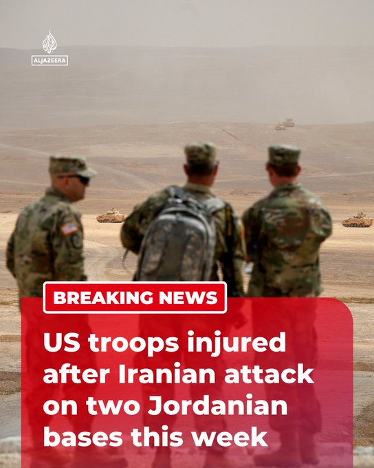

@AJENews
📝 原文: BREAKING: Several US troops were injured after their facility was shelled in an Iranian attack on two Jordanian bases this week, reports US media citing US officials.More onhttp://Aljazeera.com
🇨🇳 译文: 突发新闻：美国媒体援引美国官员的报道称，本周伊朗袭击约旦两个基地，数名美军设施遭到炮击，造成数名美军受伤。更多信息请访问 http://Aljazeera.com


🕒 2026-07-17T22:52:52+00:00